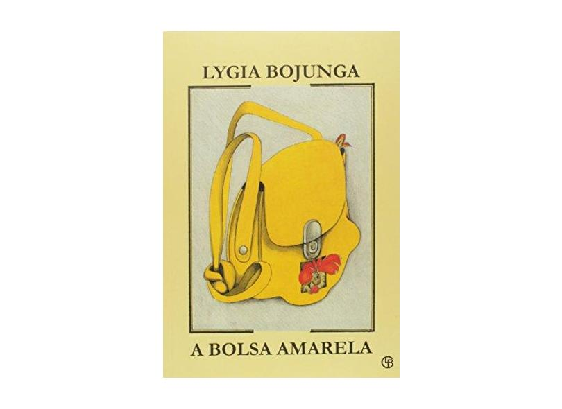

Livro

Tchau
A obra foi publicada em 2009, reúne quatro narrativas densas, onde no estilo habitual que já se tornou sua marca. Lygia transita com inteira liberdade entre o realismo e o fantastico. Falando de paixão, amizade, ciúme e da necessidade de criar.

Bolsa amarela
A obra que foi publicada em 1976, conta a história de Raquel, uma menina de 10 anos que esconde três vontades em uma bolsa amarela. Essas vontades são: crescer, ser menino e se tornar escritora.
A famosa obra de Miguel de Cervantes sobre a aventura de um cavaleiro idealista.